karchive
Алгебра - Емтихан дайындық (орыс тілінде)
@a - Kuanish Aidar [04.06.2023-12:18] |
Формулы сокращенного умножения
Квадрат суммы:
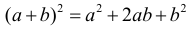
Квадрат разности:
Разность квадратов:

Разность кубов:

Сумма кубов:

Куб суммы:

Куб разности:
Последние две формулы также часто удобно использовать в виде:

Квадратное уравнение и формула разложения квадратного трехчлена на множители
Пусть квадратное уравнение имеет вид:
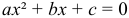
Тогда дискриминант находят по формуле:
Если D > 0, то квадратное уравнение имеет два корня, которые находят по формуле:
Если D = 0, то квадратное уравнение имеет один корень (его кратность: 2), который ищется по формуле:

Если D < 0, то квадратное уравнение не имеет корней. В случае когда квадратное уравнение имеет два корня, соответствующий квадратный трехчлен может быть разложен на множители по следующей формуле:

Если квадратное уравнение имеет один корень, то разложение соответствующего квадратного трехчлена на множители задается следующей формулой:

Только в случае если квадратное уравнение имеет два корня (т.е. дискриминант строго больше ноля) выполняется Теорема Виета. Согласно Теореме Виета, сумма корней квадратного уравнения равна:

Произведение корней квадратного уравнения может быть вычислено по формуле:
Парабола
График параболы задается квадратичной функцией:
При этом координаты вершины параболы могут быть вычислены по следующим формулам. Икс вершины:

Игрек вершины параболы:

Свойства степеней и корней
Основные свойства степеней:
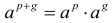
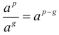

Последнее свойство выполняется только при n > 0. Ноль можно возводить только в положительную степень.
Основные свойства математических корней:


Для арифметических корней:
Последнее справедливо: если n – нечетное, то для любого a; если же n – четное, то только при a больше либо равном нолю. Для корня нечетной степени выполняется также следующее равенство:
Для корня четной степени имеется следующее свойство:
Формулы с логарифмами
Определение логарифма:

Определение логарифма можно записать и другим способом:
Свойства логарифмов:
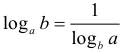
Логарифм произведения:
Логарифм дроби:

Вынесение степени за знак логарифма:


Другие полезные свойства логарифмов:

Арифметическая прогрессия
Формулы n-го члена арифметической прогрессии:

Соотношение между тремя соседними членами арифметической прогрессии:

Формула суммы арифметической прогрессии:

Свойство арифметической прогрессии:

Геометрическая прогрессия
Формулы n-го члена геометрической прогрессии:
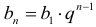
Соотношение между тремя соседними членами геометрической прогрессии:

Формула суммы геометрической прогрессии:
Формула суммы бесконечно убывающей геометрической прогрессии:
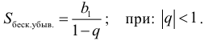
Свойство геометрической прогрессии:
Тригонометрия
Пусть имеется прямоугольный треугольник:

Тогда, определение синуса:
Определение косинуса:
Определение тангенса:

Определение котангенса:
Основное тригонометрическое тождество:
Простейшие следствия из основного тригонометрического тождества:


Формулы двойного угла
Синус двойного угла:

Косинус двойного угла:
Тангенс двойного угла:

Котангенс двойного угла:
Тригонометрические формулы сложения
Синус суммы:
Синус разности:
Косинус суммы:

Косинус разности:

Тангенс суммы:

Тангенс разности:

Котангенс суммы:

Котангенс разности:
Тригонометрические формулы преобразования суммы в произведение
Сумма синусов:

Разность синусов:
Сумма косинусов:
Разность косинусов:

Сумма тангенсов:

Разность тангенсов:

Сумма котангенсов:

Разность котангенсов:

Тригонометрические формулы преобразования произведения в сумму
Произведение синусов:

Произведение синуса и косинуса:

Произведение косинусов:
Формулы понижения степени
Формула понижения степени для синуса:

Формула понижения степени для косинуса:

Формула понижения степени для тангенса:
Формула понижения степени для котангенса:
Формулы половинного угла
Формула половинного угла для тангенса:
Формула половинного угла для котангенса:
Тригонометрические формулы приведения
Формулы приведения задаются в виде таблицы:
Тригонометрическая окружность
По тригонометрической окружности легко определять табличные значения тригонометрических функций:
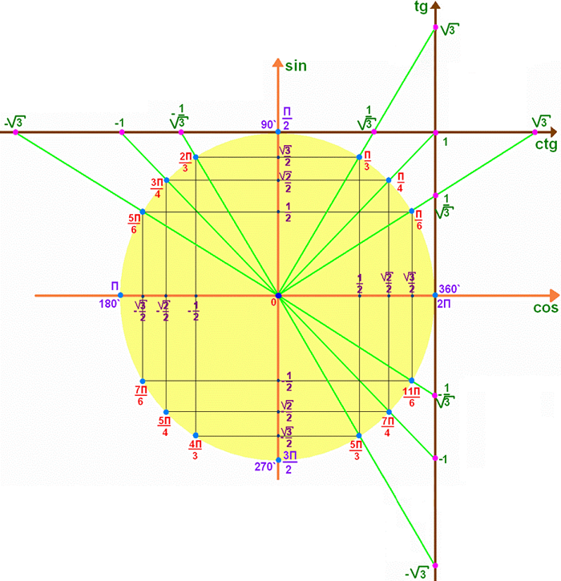
Тригонометрические уравнения
Формулы решений простейших тригонометрических уравнений. Для синуса существует две равнозначные формы записи решения:

Для остальных тригонометрических функций запись однозначна. Для косинуса:

Для тангенса:

Для котангенса:
Решение тригонометрических уравнений в некоторых частных случаях:


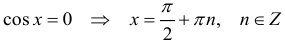


Геометрия на плоскости (планиметрия)
Пусть имеется произвольный треугольник:

Тогда, сумма углов треугольника:

Площадь треугольника через две стороны и угол между ними:

Площадь треугольника через сторону и высоту опущенную на неё:

Полупериметр треугольника находится по следующей формуле:

Формула Герона для площади треугольника:

Площадь треугольника через радиус описанной окружности:
Формула медианы:

Свойство биссектрисы:

Формулы биссектрисы:
Основное свойство высот треугольника:

Формула высоты:

Еще одно полезное свойство высот треугольника:
Теорема косинусов:
Теорема синусов:
Радиус окружности, вписанной в правильный треугольник:
Радиус окружности, описанной около правильного треугольника:
Площадь правильного треугольника:
Теорема Пифагора для прямоугольного треугольника (c - гипотенуза, a и b - катеты):

Радиус окружности, вписанной в прямоугольный треугольник:

Радиус окружности, описанной вокруг прямоугольного треугольника:
Площадь прямоугольного треугольника (h - высота опущенная на гипотенузу):
Свойства высоты, опущенной на гипотенузу прямоугольного треугольника:


Длина средней линии трапеции:

Площадь трапеции:
Площадь параллелограмма через сторону и высоту опущенную на неё:

Площадь параллелограмма через две стороны и угол между ними:

Площадь квадрата через длину его стороны:

Площадь квадрата через длину его диагонали:

Площадь ромба (первая формула - через две диагонали, вторая - через длину стороны и угол между сторонами):

Площадь прямоугольника через две смежные стороны:
Площадь произвольного выпуклого четырёхугольника через две диагонали и угол между ними:
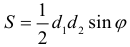
Связь площади произвольной фигуры, её полупериметра и радиуса вписанной окружности (очевидно, что формула выполняется только для фигур в которые можно вписать окружность, т.е. в том числе для любых треугольников):
Свойство касательных:

Свойство хорды:
Теорема о пропорциональных отрезках хорд:

Теорема о касательной и секущей:
Теорема о двух секущих:

Теорема о центральном и вписанном углах (величина центрального угла в два раза больше величины вписанного угла, если они опираются на общую дугу):

Свойство вписанных углов (все вписанные углы опирающиеся на общую дугу равны между собой):

Свойство центральных углов и хорд:

Свойство центральных углов и секущих:

Условие, при выполнении которого возможно вписать окружность в четырёхугольник:
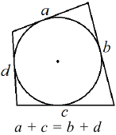
Условие, при выполнении которого возможно описать окружность вокруг четырёхугольника:

Сумма углов n-угольника:

Центральный угол правильного n-угольника:
Площадь правильного n-угольника:
Длина окружности:

Длина дуги окружности:

Площадь круга:
Площадь сектора:

Площадь кольца:
Площадь кругового сегмента:

Геометрия в пространстве (стереометрия)
Главная диагональ куба:
Объем куба:
Объём прямоугольного параллелепипеда:
Главная диагональ прямоугольного параллелепипеда (эту формулу также можно назвать: "трёхмерная Теорема Пифагора"):

Объём призмы:
Площадь боковой поверхности прямой призмы (P – периметр основания, l – боковое ребро, в данном случае равное высоте h):
Объём кругового цилиндра:

Площадь боковой поверхности прямого кругового цилиндра:
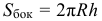
Объём пирамиды:
Площадь боковой поверхности правильной пирамиды (P – периметр основания, l – апофема, т.е. высота боковой грани):
Объем кругового конуса:
Площадь боковой поверхности прямого кругового конуса:
Длина образующей прямого кругового конуса:

Объём шара:

Площадь поверхности шара (или, другими словами, площадь сферы):

Координаты
Длина отрезка на координатной оси:

Длина отрезка на координатной плоскости:
Длина отрезка в трёхмерной системе координат:

Координаты середины отрезка (для координатной оси используется только первая формула, для координатной плоскости - первые две формулы, для трехмерной системы координат - все три формулы):

Таблица умножения

Таблица квадратов двухзначных чисел

Пайдаланылған еңбектер:
Все главные формулы по математике - Математика - Теория, тесты, формулы и задачи - Обучение Математике, Онлайн подготовка к ЦТ и ЕГЭ.K. Aidar Archive - 2023.06.04 * 12:18